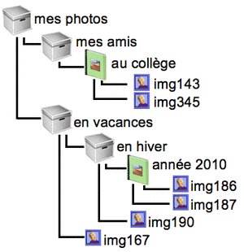

|
Castor a organisé ses photographies numériques, en utilisant des « albums » et des « boîtes » virtuels, comme décrit sur le schéma ci-contre.
|
 |
Quelle fenêtre obtiendra Castor s'il double-clique alors sur la boîte « en vacances » ?
Dans le schéma, le contenu de la boîte « en vacances » est décrit par les traits noirs qui descendent puis partent vers la droite à partir de cette boîte. Il y a deux traits, donc la fenêtre correspondant au contenu de la boîte contient deux objets, qui sont ceux montrés dans la fenêtre :
La bonne réponse est donc 3.
Cet exercice permettait de mieux comprendre la manière dont les fichiers sont souvent organisés au sein du système de fichiers d'un ordinateur, et plus généralement, de se familiariser avec la structure d'arbre souvent utilisée en algorithmique et en informatique en général.
Pour le résoudre, on devait comprendre cette organisation en arbre : "mes photos" contient à la fois "mes amis" et "en vacances", "au collège" contient à la fois "img143" et "img345"... Il fallait aussi comprendre ce que voit Castor quand il clique : il va entrer dans ses albums pour voir ce qu'ils contiennent et il se déplace donc dans l'arbre général contenant touts ses albums, ses boîtes et ses photos.
Les documents que nous créons à l'aide d'applications informatiques sont mémorisés dans des fichiers de données. Ces fichiers sont stockés dans des espaces de stockage, tels que le disque dur d'un ordinateur, la carte mémoire d'un appareil photo, etc...
Sur la plupart des ordinateurs, l'utilisateur peut organiser ses fichiers en les classant dans des dossiers, selon une organisation arborescente. L'arborescence de fichiers (présentée dans l'exercice) offre une représentation schématique, lui facilitant l'organisation de ses fichiers.
Cependant, depuis quelques années, sont apparus des outils mobiles tels que les tablettes ou les smartphones. Ils ne présentent plus cette organisation arborescente. En effet, les systèmes d'exploitation de ces outils sont conçus de telle sorte que ce sont les applications qui enregistrent automatiquement les fichiers de données, d'une façon non visible pour l'utilisateur.